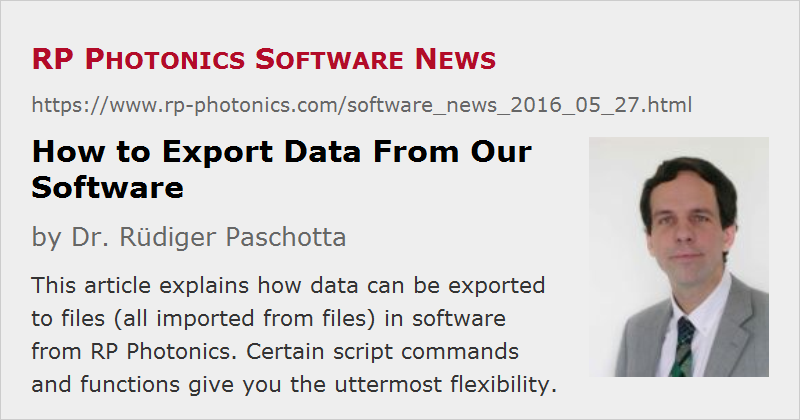

How to Export Data From Our Software
Posted on 2016-05-27 in the RP Photonics Software News (available as e-mail newsletter!)
Permanent link: https://www.rp-photonics.com/software_news_2016_05_27.html
Author: Dr. Rüdiger Paschotta, RP Photonics Consulting GmbH
Abstract: This article explains how data can be exported to files (all imported from files) in software from RP Photonics. Certain script commands and functions give you the uttermost flexibility.

I am often asked whether or how one could export data from our software in order to process them further in other software like MatLab or Origin. Therefore, I now devote an article to that topic.
It is actually a good idea to ask the following question first:
Do You Really Want to Export the Data?
This question is useful because there are plenty of bad reasons for transferring the data to some other software:
- You want to combine several pieces of data in one diagram.
- You want to add further features to a diagram (e.g. various labels, additional plots, etc.).
- You want to change the style of the diagram, with modified details like font types and font sizes.
- You want to generate graphics with higher resolution, e.g. use in a print publication.
Why are these bad reasons? Simply because it is normally more convenient to do such things directly in our software – avoiding the hassle of exporting the data, starting some other software, importing their – and doing everything from start when your calculation run has to be done again. Here, I don't want to discuss the details of how to do the mentioned things in our software, but you can have a look at the documentation or ask me within the technical support.
Well, there are of course also good reasons for exporting data – for example:
- You may need to store the results of time-consuming calculations for later use. (Of course, you can later read these data also with our software – for example, for further processing and plotting them.)
- The data are needed by a colleague who does not have our software.
New Feature: Getting Numerical Data Corresponding to a Diagram
Often, someone generates a diagram with our software and then wants to have the corresponding data points in numerical form as well. I have just implemented a new feature which gives you exactly that. For each diagram, our software produces a graphics window, which now contains an additional tab control where you can switch between the graphical output (shown by default) and the underlying numerical data – as an example, see a screen shot:
The nice thing is not only that you see the numerical data with only one more click – you can also freely modify the format of the data points, because that is defined by a simple list of mathematical expressions. Therefore, it would be easy to achieve the following, for example:
- Modify the number of displayed valid digits, or set a fixed number of digits after the floating point.
- Use a tab character (char(9)) instead of a comma as the separator.
- Rescale the data in any way, e.g. convert them to other units.
- Exchange the columns or add another column, which shows e.g. a quantity calculated from x and y.
After changing the formatting expressions, just press the “Reformat” button, and the displayed results will be recalculated accordingly.
You can then copy the data to the Windows clipboard or save the data to a file.
If you already have our software and want that feature (which is now offered by all our programs except for RP Fiber Calculator), just tell us, and you will get a free update.
The new feature will probably be appreciated by many, but it can clearly not satisfy all potential needs. Some examples:
- The x values of the data points are generally not equidistant: you get exactly those points which were calculated for the plot, and the choice of x positions is done by the plotting algorithm with automatic step size control.
- You may want to export some data without plotting them.
- You may want to generate multiple files automatically (i.e., without further manual operations).
Therefore, other ways of exporting data are needed, as described in the following. (These features have existed for longer while, but if you have a very old version, you may need an update first.)
Using Script Commands
As an example, let us assume that with our software RP Fiber Power you want to generate a file which describes the evolution of pump and signal power within the fiber of a fiber amplifier. This could be done with a few lines of script code as follows:
FileName$ := "pump and signal vs position.txt"
write "; position (m), pump power (W), signal power (dBm)",
>(FileName$)
for z := 0 to L_f step 0.1 do
write [z:f1, ", ", P(pump, z):d6, ", ",
10 * lg(P(signal, z) / mW):f1], >>(FileName$)
Obviously, that way you have full control over details like the step size of the data points, the rounding of values, separator characters, etc.
Note that you can use such commands even when working with interactive forms in RP Fiber Power: the forms contain fields where you can enter some script code.
Using Expressions for Even More Flexibility
You can enjoy an even greater flexibility by using certain functions in expressions rather than commands. These specialized functions are useful for data output to files; you can even export or import binary data. The difference between functions and commands is that a function can be called within any mathematical or string expression; such an expression can be contained in a script command. You can then also profit from the even substantially more powerful control structures as offered by our mathematical engine.
In the following, I show you an example where such functions are used within a user-defined function, and this time we export data in binary form:
SavePumpAndSignal(FileName$) :=
begin
global allow all;
var f;
f := open_file(FileName$, "wb");
{ open for writing a binary file }
for z := 0 to L_f step 0.1 do
write_bin(f, P(pump, z), 10 * lg(P(signal, z) / mW));
close_file(f);
end
Once you have defined that, you can easily call that function in later parts of your script. For example, you could use a loop which produces multiple files, each one for a different signal input power:
calc
for P_in_dBm := -30 to -20 step 2 do
begin
set_P_in(signal, expd(P_in_dBm / 10) * mW);
{ set the signal input power }
SavePumpAndSignal("pump and signal, input "
+ str(P_in_dBm:d6) + " dBm.txt");
end
You see that such features really give you an enormous flexibility. You can generate text files and binary files of any format. Of course, you could write any sequence of numerical or string data into a binary file; also, you can choose between single precision and double precision data.
Importing Data
Similarly as shown above, you could import the most complex types of files, if you only know the file format to expect. It would be no problem, for example, to read from such a file first how many data points will follow, then read the appropriate number of points, and finally compute the minimum, maximum, average and r.m.s. value from the results.
You thus see that you might even want to use our software for processing data from other sources – even if they do not relate to physics simulations. There should be no need to have something like MatLab in addition for such purposes.
This article is a posting of the RP Photonics Software News, authored by Dr. Rüdiger Paschotta. You may link to this page, because its location is permanent.
Note that you can also receive the articles in the form of a newsletter or with an RSS feed.
|  |
If you like this article, share it with your friends and colleagues, e.g. via social media:
These sharing buttons are implemented in a privacy-friendly way!